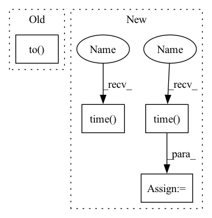

Pattern ID :3013

Before Change
feature, order0 = feature
label, order1 = label
feature = torch.cat([f.to(device) for f in feature])
label = torch.cat([l.to(device) for l in label])
origin_feature = torch.empty_like(feature)
origin_label = torch.empty_like(label)
origin_feature[order0] = feature
After Change
total_loss = total_correct = 0
w.turn_on("sample")
t0 = time.time()
torch.set_num_threads(5)
samples = [sample for sample in train_loader]
run_barrier()
for n_id, batch_size, adjs in samples:
// `adjs` holds a list of `(edge_index, e_id, size)` tuples.
// w1.tick("prepro")
w.turn_off("sample")
w.turn_on("train")
adjs = [adj.to(device) for adj in adjs]
feature = x[n_id].to(device)
label = y[n_id[:batch_size]].to(device)
// feature, order0 = feature
// label, order1 = label
// feature = torch.cat([f.to(device) for f in feature])
// label = torch.cat([l.to(device) for l in label])
// origin_feature = torch.empty_like(feature)
// origin_label = torch.empty_like(label)
// origin_feature[order0] = feature
// origin_label[order1] = label
optimizer.zero_grad()
out = model(feature, adjs)
loss = F.nll_loss(out, label)
loss.backward()
optimizer.step()
// w1.tick("train")
total_loss += float(loss)
total_correct += int(out.argmax(dim=-1).eq(label).sum())
// pbar.update(batch_size)
torch.cuda.synchronize(0)
w.turn_on("sample")
w.turn_off("train")
// if args.rank == 0:
// print(f"one step took {time.time() - t0}")
t0 = time.time()
// pbar.close()
w.turn_off("sample")
loss = total_loss / len(train_loader)
In pattern: SUPERPATTERN
Frequency: 3
Non-data size: 4
Instances
Fragment ID: 11658535
Project Name: quiver-team/torch-quiver
Commit Name: 229241ef652f57e055b9dac0946868822b0b04d7
Time: 2021-03-24
Author: 41138939+ZenoTan@users.noreply.github.com
File Name: benchmarks/ogbn_products_sage/dist_sampling.py
M Class Name: AnonimousClass
N Class Name: AnonimousClass
M Method Name: train(1)
N Method Name: train(1)
M Parent Class:
N Parent Class:
M File Name: benchmarks/ogbn_products_sage/dist_sampling.py
N File Name: benchmarks/ogbn_products_sage/dist_sampling.py
M Start Line: 168
M End Line: 191
N Start Line: 169
N End Line: 205
'>
Before Change
feature, order0 = feature
label, order1 = label
feature = torch.cat([f.to(device) for f in feature])
label = torch.cat([l.to(device) for l in label])
origin_feature = torch.empty_like(feature)
origin_label = torch.empty_like(label)
origin_feature[order0] = feature
After Change
total_loss = total_correct = 0
w.turn_on("sample")
t0 = time.time()
torch.set_num_threads(5)
samples = [sample for sample in train_loader]
run_barrier()
for n_id, batch_size, adjs in samples:
// `adjs` holds a list of `(edge_index, e_id, size)` tuples.
// w1.tick("prepro")
w.turn_off("sample")
w.turn_on("train")
adjs = [adj.to(device) for adj in adjs]
feature = x[n_id].to(device)
label = y[n_id[:batch_size]].to(device)
// feature, order0 = feature
// label, order1 = label
// feature = torch.cat([f.to(device) for f in feature])
// label = torch.cat([l.to(device) for l in label])
// origin_feature = torch.empty_like(feature)
// origin_label = torch.empty_like(label)
// origin_feature[order0] = feature
// origin_label[order1] = label
optimizer.zero_grad()
out = model(feature, adjs)
loss = F.nll_loss(out, label)
loss.backward()
optimizer.step()
// w1.tick("train")
total_loss += float(loss)
total_correct += int(out.argmax(dim=-1).eq(label).sum())
// pbar.update(batch_size)
torch.cuda.synchronize(0)
w.turn_on("sample")
w.turn_off("train")
// if args.rank == 0:
// print(f"one step took {time.time() - t0}")
t0 = time.time()
// pbar.close()
w.turn_off("sample")
loss = total_loss / len(train_loader)
'>
Fragment ID: 11658534
Project Name: quiver-team/torch-quiver
Commit Name: 229241ef652f57e055b9dac0946868822b0b04d7
Time: 2021-03-24
Author: 41138939+ZenoTan@users.noreply.github.com
File Name: benchmarks/ogbn_products_sage/dist_sampling.py
M Class Name: AnonimousClass
N Class Name: AnonimousClass
M Method Name: train(1)
N Method Name: train(1)
M Parent Class:
N Parent Class:
M File Name: benchmarks/ogbn_products_sage/dist_sampling.py
N File Name: benchmarks/ogbn_products_sage/dist_sampling.py
M Start Line: 168
M End Line: 191
N Start Line: 169
N End Line: 205
'>
Before Change
token_ids = torch.unsqueeze(torch.LongTensor(input_ids), 0).to(self.device)
attention_mask = torch.unsqueeze(torch.LongTensor(encode_results.get("attention_mask")), 0).to(self.device)
segment_ids = torch.unsqueeze(torch.LongTensor(encode_results.get("token_type_ids")), 0).to(self.device)
model_outputs = self.model(token_ids, attention_mask, segment_ids).detach().to("cpu")
model_output = torch.squeeze(model_outputs)
results = self.data_manager.extract_entities(sentence, model_output)
results_dict = {}
for class_id, result_set in results.items():
After Change
预测接口
start_time = time.time()
encode_results = self.data_manager.tokenizer(sentence, padding="max_length")
input_ids = encode_results.get("input_ids")
token_ids = torch.unsqueeze(torch.LongTensor(input_ids), 0).to(self.device)
attention_mask = torch.unsqueeze(torch.LongTensor(encode_results.get("attention_mask")), 0).to(self.device)
segment_ids = torch.unsqueeze(torch.LongTensor(encode_results.get("token_type_ids")), 0).to(self.device)
logits, _ = self.model(token_ids, attention_mask, segment_ids)
logit = torch.squeeze(logits.to("cpu"))
results = self.data_manager.extract_entities(sentence, logit)
self.logger.info("predict time consumption: %.3f(ms)" % ((time.time() - start_time) * 1000))
results_dict = {}
for class_id, result_set in results.items():
results_dict[self.data_manager.reverse_categories[class_id]] = list(result_set)
'>
Fragment ID: 11658537
Project Name: stanleylsx/entity_extractor_by_binary_tagging
Commit Name: 53fb785dbe629c71f02b0f58a40d3f36e5eb3dc2
Time: 2022-06-08
Author: gzlishouxian@gmail.com
File Name: engines/predict.py
M Class Name: Predictor
N Class Name: Predictor
M Method Name: predict_one(2)
N Method Name: predict_one(2)
M Parent Class:
N Parent Class:
M File Name: engines/predict.py
N File Name: engines/predict.py
M Start Line: 31
M End Line: 35
N Start Line: 30
N End Line: 39